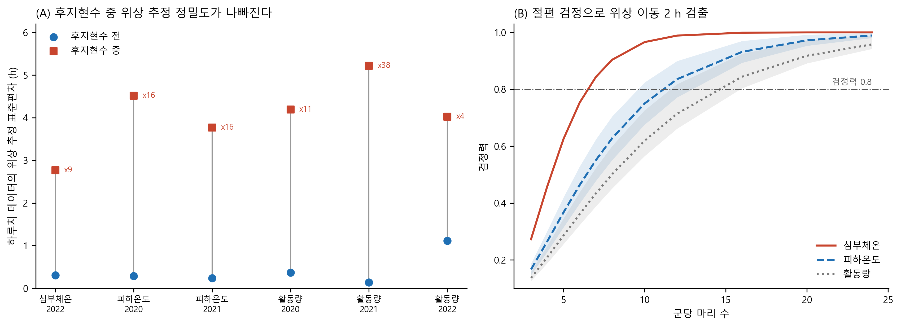
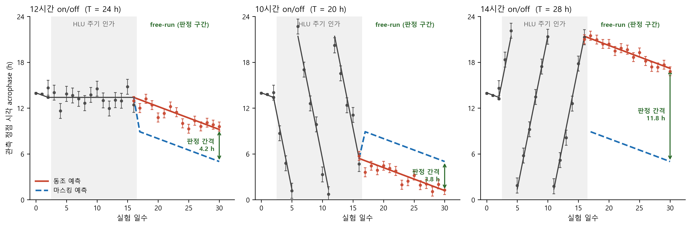

KASA 연구계획서 — 「2 연구의 내용 및 방법」 · 「3 기대효과 및 활용방안」
드라이랩 담당분 원고 · 2026-08 (압축본)
2 연구의 내용 및 방법
□ 연구방법
※ 아래는 '나. 드라이랩' 부분입니다.
◦ (나) 드라이랩 — 공개 데이터로 웻랩의 측정 지표와 표본 수를 사전에 확정한다
- 실험 전에 수행하며 이미 착수하였다. 지상 모사가 어느 지표에서 실제 비행과 일치하는지를 확정하고, 그 지표 위에서 필요한 표본 수를 산출하여 웻랩 설계에 입력한다.
◦ 자료 확보 — 공개 데이터 전수 조사
- 탐색 범위는 NASA 공개과학데이터저장소(OSDR) 스터디 633건 · 파일 157,801개를 파일명 수준까지 개봉한 전수 조사, NASA 생명과학데이터아카이브(LSDA) 데이터셋 2,593건, 공개 저장소(Recherche Data Gouv, figshare 등), 그리고 중력 조건 11종 × 리듬 지표 8종을 교차한 문헌 검색이다.
- 채택 기준은 분석 착수 전에 확정하고, 판정을 이미 알고 있는 자료에 역방향으로 적용해 규칙을 검증한 뒤에만 사용하였다.
◦ 분석 — 공통 지표와 잡음 기준
- 측정 방식이 서로 다른 자료를 같은 축에 놓기 위해 cosinor 지표(MESOR · 진폭 · 최고시각)와 파형 가정이 없는 비모수 지표를 함께 산출하고, 모든 효과를 같은 개체의 처치 전 구간 대비 변화로 환산한다.
- 어떤 비율도 주장하기 전에, 처치가 없었던 구간을 무작위로 둘로 나눠 같은 계산을 2,000회 반복해 '효과가 없을 때 나타나는 변화의 크기'를 구하고, 이후 모든 결과를 그 값 대비 몇 배인지로 표기한다. 분석 코드가 원논문 보고값을 재현하는지 먼저 검사하였다.
◦ 표본 수 산출
- 실측 시계열에서 얻은 하루치 위상 추정 오차를 잡음으로 두고, 본 연구의 판정 기준인 회귀선 비교를 그대로 적용한다. 절편 검정은 '처치로 새 위상이 형성되었는가', 기울기 검정은 '주기 자체가 인가 주기로 바뀌었는가'를 묻는다.
- 리듬의 주기가 T이면 24시간 시계에서 정점 시각이 하루에 (T − 24)시간씩 이동하므로, 기울기 검정의 효과 크기는 실험 설계가 정한다. 10시간 on/off는 하루 4시간, 12시간 on/off는 0.3시간이다.
- 개체마다 두 구간에 직선을 적합하고 개체 단위 통계량에 1표본 t 검정을 적용한다. 개체 고유의 위상이 차분에서 상쇄되므로 적은 마리 수로도 검정이 성립한다.
◦ 예상 결과 산출
- 동조 가설과 마스킹 가설이 각각 만드는 관측값을 일별 위상 계산으로 정의하고, 위에서 실측한 위상 추정 오차를 표준오차로 부여한다. 두 가설은 후지현수 구간에서 구별되지 않으며, 후지현수를 제거한 뒤 갈라지는 간격이 판정 신호가 된다.
◦ 역문제 설정
- 공개된 비행 전사체는 단일 시점 자료여서 진폭 변화와 위상 이동을 구별하지 못한다. 웻랩이 위상 이동량을 재 오면 그 미지수가 채워지므로, 위상만 이동했을 때 단일 시점에서 보일 시계유전자 발현 변화를 지상 아틀라스의 실측 진폭으로 미리 계산해 둔다. 희생 시각이 기록돼 있지 않으므로 0~24시 전 구간에 대해 범위로 산출한다.
□ 연구절차
- 팀원 A(전산 전공) : 공개 데이터 전수 조사, 원자료 확보와 공통 지표 산출, 잡음 기준 · 검정력 산출, 역문제 예측. 재현 스크립트 일체 작성. 원본 파일은 해시값으로 고정하여 재실행 시 같은 결과가 나오도록 관리한다.
3 연구결과의 기대효과 및 활용방안
□ 예상되는 결과
◦ (1) 이 질문에 답할 공개 데이터가 존재하지 않음을 확인하였다
- OSDR 전체 파일 157,801개 중 리듬 관련 자료는 52개(5개 스터디)뿐이었고, 그중 하루 4점 이상을 24시간에 걸쳐 확보한 것은 한 건도 없었다.
- 일주기 리듬을 목적으로 설계된 유일한 우주비행 실험은 NASA 아카이브에 "원자료가 제출되지 않음(No data submitted by PI)"으로 기록돼 있고, 지상에서 중력을 되돌려 넣은 유일한 통제 실험은 일주기 위상을 측정하지 않았다.
- 즉 본 연구가 필요한 이유는 선행연구가 부족해서가 아니라, 이 질문에 답할 형태의 데이터를 아직 누구도 만들지 않았기 때문이다. 웻랩이 그 첫 자료가 된다.
◦ (2) 측정 지표 · 표본 수 · 판정 경로가 산출되었다
- 1차 지표를 심부체온으로 둔다. 같은 동물 · 같은 기간 · 같은 임플란트에서 후지현수 중 리듬이 유지된 개체는 심부체온 5/6, 활동량 1/6, 피하온도 1/5였다. 체온 리듬이 활동량의 부산물이 아니며 피부가 아닌 심부여야 함을 같은 자료가 보여준다. 활동량은 2차 지표로 유지한다.
| 표 1. 검정력 0.8 을 얻는 최소 마리 수 (처치 전 3일 · 처치 14일 · 유의수준 0.05) | ||||
| 지표 | 절편 검정 2시간 이동 |
기울기 12h군 |
기울기 10h군 |
기울기 14h군 |
| 심부체온 | 7 | 10 | 3 | 3 |
| 피하온도 | 10 ~ 16 | 10 ~ 16 | 3 | 3 |
| 활동량 | 12 ~ 16 | 16 초과 | 3 ~ 5 | 3 ~ 10 |
- 후지현수 중에는 지표가 억제되어 위상 추정 오차가 3.6배에서 38배까지 커진다(그림 1). 이는 모든 지표에 해당하므로 '후지현수 중에 새 위상이 형성되는가'는 직접 판정이 어렵고, 후지현수를 제거한 자유진행(free-run) 구간이 주 판정 경로가 되어야 한다.
- 10시간 · 14시간 군은 위상이 하루 4시간씩 표류해 기울기 검정이 3마리로 성립하나, 12시간 군은 0.3시간에 그쳐 절편 검정에 의존한다. 군별 주 검정을 사전에 지정한다.

그림 1. 마스킹의 정량화와 그에 따른 표본 수. (A) 개체별 원자료에서 24시간 창을 하루씩 밀며 최고시각을 추정하고 개체 내 표준편차를 구했다. 후지현수를 걸면 지표가 억제되어 위상 추정 오차가 3.6배에서 38배까지 커지며, 저하 폭은 심부체온이 가장 작다. (B) 이 오차를 잡음으로 두고 회귀선 절편 차이 검정을 적용한 검정력. 음영은 코호트 간 범위다.
◦ (3) 웻랩 수행 후 예상되는 결과
사전 분석에서 실측한 위상 추정 오차를 그대로 넣어 세 군의 예상 관측값을 산출하였다(그림 2). 후지현수를 거는 동안에는 두 가설이 같은 궤적을 그려 구별할 수 없고, 제거한 뒤에야 갈라진다.
| 표 2. 군별 예상 판정 간격 (심부체온, 8마리 기준) | |||
| 실험군 | 주기 | 두 가설의 예상 간격 | 군평균 표준오차 대비 |
| 12시간 on/off | 24 h | 4.2 h | 7.1 배 |
| 10시간 on/off | 20 h | 3.8 h | 6.4 배 |
| 14시간 on/off | 28 h | 11.8 h | 20.0 배 |
- 주 가설. 세 군 모두 후지현수 구간에서 위상이 인가 주기를 따라 이동하고, 제거한 뒤에도 그 위상이 유지된다. 예상 판정 간격이 군평균 표준오차의 6.4~20배이므로 세 군 모두 검출 가능하다. 이 경우 빛이 아닌 중력 변화만으로 생체리듬이 새로 동조된다는 결론이 성립한다.
- 10시간 군이 결정적 증거다. 마우스의 내인성 주기는 약 23.7시간이므로, 20시간 주기를 따라간다면 내인성 리듬과의 우연한 일치일 수 없다.
- 대안 결과. 처치 전 위상으로 되돌아가면 동조가 아니라 마스킹이었다는 결론이 된다. 이 경우에도 지상 모사가 어디까지 유효한지의 경계가 정해지므로 후속 연구가 반복할 필요가 없는 결과가 남는다. 어느 쪽이 나오든 결론이 난다.

그림 2. 웻랩 예상 결과. 세로 음영은 후지현수 주기를 인가하는 14일, 오른쪽은 제거한 자유진행 14일이다. 오차막대는 임의값이 아니라 사전 분석에서 실측한 심부체온 위상 추정 오차(후지현수 전 0.31시간 / 중 2.77시간 / 해제 후 1.67시간)를 8마리 군평균으로 환산한 값이다. 인가 구간에서는 동조와 마스킹이 같은 궤적을 그려 구별할 수 없고, 제거한 뒤 갈라지는 간격(초록 화살표)이 판정 신호다.
◦ (4) 웻랩 결과가 기존 우주비행 자료의 재해석을 가능하게 한다
- 웻랩이 측정할 위상 이동량은 새 자료를 만드는 데 그치지 않는다. 단일 시점 전사체가 진폭 변화와 위상 이동을 구별하지 못하는 문제를, 위상 이동량을 외부에서 넣어 줌으로써 풀 수 있기 때문이다.
- 사전 계산 결과 기존 비행 자료가 해석 가능해지는 위상 이동의 하한은 약 0.55시간이고 웻랩이 검출할 수 있는 하한은 약 1시간으로, 두 범위가 겹친다. 즉 추가 우주 실험 없이도 이미 축적된 비행 자료의 재해석이 가능해진다.
- 웻랩 결과가 나오기 전에 예측을 확정해 둔다. 측정된 위상 이동이 하한보다 작으면, 기존 비행 자료에서 시계유전자 신호가 잡히지 않는 것은 '효과 없음'의 증거가 아니라 분해능의 한계임이 정량적으로 확정된다. 하한보다 크면, 비행 자료의 관측값이 예측값에 못 미치는 만큼이 곧 중력 이외 요인의 기여분의 하한이 된다.
◦ (5) 산출되는 중간 결과물
- 공개 데이터 감사표, 서로 다른 실험을 통합한 공통 형식 시계열 자료 16,561행, 지표별 잡음 기준표, 표본 수 · 관측일수별 검정력 격자, 위상 이동량 대 시계유전자 발현 변화 예측표.